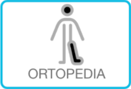
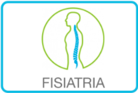
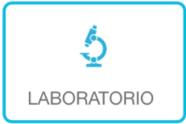

<!-- ***********************************************

[HTML /Hospital Metropolino-506]

Proyecto:	Programación Web
Version:	1.1
Fecha de creación:	06/2021
Desarrollado: Hellen Aguilar Noguera
Profesora: Denieci Moreno Azofeifa
Centro Universitario: UNED

*********************************************** -->

<!DOCTYPE html>
<html>
  <!-- Div es otra forma de dividir contenido para posteriormente aplicarle clases y modificar su estilo. -->
<div>
  <head>
    <meta charset="UTF-8">
    <meta name="description" content="Hospital Metropolino-506">
    <meta name="keywords" content="HTML5, CSS">
    <meta name="teacher" content="Denieci Moreno Azofeifa">
    <meta name="author" content="Hellen Aguilar Noguera">
    <meta name="viewport" content="width=device-width, initial-scale=1.0">
    <title>ESPECIALIDADES 506</title>
  </head>
  
</div>
  <!-- Meta Tag** ALT  Div es otra forma de dividir contenido para posteriormente aplicarle clases y modificar su estilo. -->
<div>
  <body style="background-color:rgb(254, 254, 255);">
    <header>
       
      <h1>HOSPITAL METROPILITANO 506</h1>
      <!-- <p>Un hospital con las más alta tecnología en todos los aspectos</p> -->
    </header>
    <!-- nav sirve para delimitar el menú de la página, donde se colocarán los enlaces internos para poder moverse entre las diferentes secciones del sitio web. -->
    <nav>
     <!-- href Especifica la url donde se localiza la hoja de estilo. -->
      <a href="/Banner/">Banner</a> |
      <a href="/De/">De</a> |
      <a href="/Imagnes/">Imagnes</a> |
      <a href="/Informativas/">Informativas</a>
    </nav>

    <!-- Section engloba una sección de texto, imágenes y otros elementos que guardan cierta relación entre ellos -->
    <section>
      <ul>
        <li><a href="url">| Inicio |</a>
          <a href="url">| De su Interés |</a>
          <a href="calendario.html">| Generación de Citas |</a>
          <a href="url">| Expediente |</a>
          <a href="url">| Servicios |</a>
          <a href="url">| Loguin</a>
        </li>
      </ul>
  
      <!-- Article se suele encontrar dentro de una etiqueta section y sirve para dividir y ordenar los contenidos en su interior. -->
      <article class = "articulo">
        <h1>ESPECIALIDADES MÉDICAS</h1>
      <!-- ALT Si una imagen no se puede mostrar por alguna razón, el atributo ALT proporciona texto alternativo para mostrar en su lugar.-->
        <a href="calendario.html">  </a>
        
        
        
        
        
        
        
  
      </article>
  
    </section>
    <footer>
      <br><br>
      <!-- <button style="background-color:rgb(200, 222, 233);">Contactenos</button>   -->
      <li>Contactenos</li>
      <li> Llame al
        (900)9999-9999
      </li>
      <p>Correo Electronico: <a href="mailto:metropolitano506@hospital.com">metropolitano506@hospital.com</a></p>
      <h4>Ubicación</h4>
      <p>San José</p>
      <li>Escazú </li>
    </footer>
  
  </body>
</div>


</html>